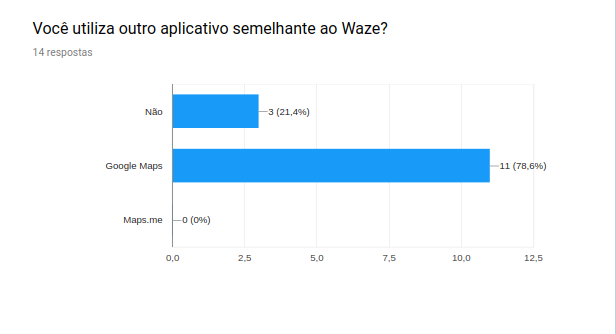
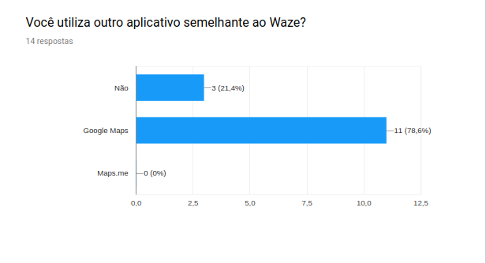

Questionario
1.Introdução
Questionário é uma técnica inflexível de elicitação de requisitos, pos é uma das técnicas que pode abranger um grande número de pessoas é o questionário. O seu uso é essencial quando se desejaobter informações de inúmeras pessoas. Além disso, justifica-se a sua aplicabilidade quando há indisponibilidade física, dispersão das pessoas envolvidas no projeto ou, até mesmo, quando há necessidade de um levantamento estatístico das pessoas que utilizaram o sistema.
2.Metodologia
O questionario faz uma divisão entre dois grupos: usuarios que usam o waze e usuarios que não usam, esta divisão foi feita para que o questionario não se delimitasse a apenas usuarios que usam waze e assim saber o por que esses usuarios não usam. podemos observar que a maior parte dos usuarios que responderam o questionario usam waze.

3.Usuarios que não usam waze

 

4.Experiência do usuário


5.Feedback sobre waze
6.Analise
A partir dos resultado obtidos com o questionário, verificou-se que as funcionalidades de utilizar mídia no Waze através de outros aplicativos e informaçoes sobre estabelicimentos próximos teve uma baixa utilização no aplicativo. Além disso, 100% dos questionados, até aqueles que não utilizam o Waze desejam ter informações sobre seu trajeto(acidentes ou tempo de chegada).
7.Requisitos elicitados
MoSCoW
| ID | Descrição | Prioridade |
|---|---|---|
| Q01 | O usuário deve ser informado sobre acontecimentos em sua rota(blitz ou acidentes) | Must |
| Q02 | O aplicativo deve ter conexão com um aplicativo de mídia | Would |
| Q03 | A navegação deve funcionar offline | Must |
| Q04 | O usuário deve receber informações sobre a via(radares ou velocidade) | Should |
| Q05 | O usuário deve informar eventos na sua rota | Could |
| Q06 | O usuário deve ser informado sobre estabelicimentos próximos | Would |
8.Referências Bibliográficas
ANÁLISE DAS TÉCNICAS DE LEVANTAMENTO DE REQUISITOS PARA DESENVOLVIMENTO DE SOFTWARE NAS EMPRESAS DE VITÓRIA DA CONQUISTA – BA. Disponível em: http://www2.uesb.br/computacao/wp-content/uploads/2014/09/AN%C3%81LISE-DAS-T%C3%89CNICAS-DE-LEVANTAMENTO-DE-REQUISITOS-PARA-DESENVOLVIMENTO-DE-SOFTWARE-NAS-EMPRESAS-DE-VIT%C3%93RIA-DA-CONQUISTA-%E2%80%93-BA.pdf. Acesso em 09/09/19
Elicitação de requisitos, Questionario. Disponível em: https://fga-disciplinas.github.io/2019.1-Guia-Bolso/elicitacao-de-requisitos/questionario/
9.Histórico de Versões
| Data | Versão | Descrição | Autor(es) |
|---|---|---|---|
| 09/09/19 | 1.0 | Criação do documento | João Pedro, Lucas Alexandre, Moacir Mascarenha |